Adult
Table of Contents
- 1. Init
- 2. Priliminary analysis
- 3. Analysis of protected attribute
sex- 3.1. Analysis of
num_{positive,negative},num_{true,false}_{positive,negative}&num_{true,false}_{positive_negative}_rate - 3.2. Analysis of
base_rate - 3.3. Analysis of
{positive,negative}_predictive_value&false_{discovery,omission}_rate - 3.4. Analysis of
disparate_impact&statistical_parity_difference
- 3.1. Analysis of
- 4. Analysis of protected attribute
race- 4.1. Analysis of
num_{positive,negative},num_{true,false}_{positive,negative}&num_{true,false}_{positive_negative}_rate - 4.2. Analysis of
base_rate - 4.3. Analysis of
{positive,negative}_predictive_value&false_{discovery,omission}_rate - 4.4. Analysis of
disparate_impact&statistical_parity_difference
- 4.1. Analysis of
In this file we analyse the results obtained from computing all
BinaryLabelDatasetMetric & ClassificationMetric for the adult
dataset with a LinearRegression model, for a single protected
attribute sex. The results are stored in adult.csv which is what
we will analyse here. The dataset can be generated using the
bin/adult.py script.
1. Init
In this section we perform some sanity checks, load the necessary modules & the dataset.
import pandas as pd
import numpy as np
pd.set_option('display.max_columns', None)
pd.set_option('display.max_colwidth', None)
pd.set_option('display.max_rows', None)
import matplotlib
matplotlib.use('Agg') # non-interactive backend
import matplotlib.pyplot as plt
import seaborn as sns
import os
import sys
ROOTDIR = os.path.abspath(os.path.join(os.getcwd(), '..'))
DATADIR = os.path.join(ROOTDIR, 'data')
sys.path.insert(0, ROOTDIR)
from src import utils
from src.utils import data_metrics_columns, model_metrics_columns
adult = pd.read_csv(os.path.join(DATADIR, 'adult.csv'))
2. Priliminary analysis
In this section we conduct some priliminary analysis of the dataset.
adult
FN PPV TNR TP subset statistical_parity_difference \
0 NaN NaN NaN NaN full -0.198901
1 NaN NaN NaN NaN full NaN
2 NaN NaN NaN NaN full NaN
3 NaN NaN NaN NaN full -0.103959
4 NaN NaN NaN NaN full NaN
5 NaN NaN NaN NaN full NaN
6 NaN NaN NaN NaN train -0.201944
7 NaN NaN NaN NaN train NaN
8 NaN NaN NaN NaN train NaN
9 NaN NaN NaN NaN train -0.105242
10 NaN NaN NaN NaN train NaN
11 NaN NaN NaN NaN train NaN
12 1093.0 0.729868 0.925412 1713.0 test -0.184484
13 NaN NaN NaN NaN test -0.189774
14 878.0 0.728208 0.894647 1487.0 test NaN
15 NaN NaN NaN NaN test NaN
16 215.0 0.740984 0.975557 226.0 test NaN
17 NaN NaN NaN NaN test NaN
18 1093.0 0.729868 0.925412 1713.0 test -0.095887
19 NaN NaN NaN NaN test -0.100076
20 973.0 0.734077 0.920401 1579.0 test NaN
21 NaN NaN NaN NaN test NaN
22 120.0 0.683673 0.952816 134.0 test NaN
23 NaN NaN NaN NaN test NaN
FOR GFPR accuracy num_positives GTN protected GFNR FDR \
0 NaN NaN NaN 11208.0 NaN sex NaN NaN
1 NaN NaN NaN 9539.0 NaN sex NaN NaN
2 NaN NaN NaN 1669.0 NaN sex NaN NaN
3 NaN NaN NaN 11208.0 NaN race NaN NaN
4 NaN NaN NaN 10207.0 NaN race NaN NaN
5 NaN NaN NaN 1001.0 NaN race NaN NaN
6 NaN NaN NaN 8402.0 NaN sex NaN NaN
7 NaN NaN NaN 7174.0 NaN sex NaN NaN
8 NaN NaN NaN 1228.0 NaN sex NaN NaN
9 NaN NaN NaN 8402.0 NaN race NaN NaN
10 NaN NaN NaN 7655.0 NaN race NaN NaN
11 NaN NaN NaN 747.0 NaN race NaN NaN
12 0.122000 0.0 0.847249 NaN 8500.0 sex 0.0 0.270132
13 NaN NaN NaN 2806.0 NaN sex NaN NaN
14 0.157038 0.0 0.812263 NaN 5268.0 sex 0.0 0.271792
15 NaN NaN NaN 2365.0 NaN sex NaN NaN
16 0.063836 0.0 0.919956 NaN 3232.0 sex 0.0 0.259016
17 NaN NaN NaN 441.0 NaN sex NaN NaN
18 0.122000 0.0 0.847249 NaN 8500.0 race 0.0 0.270132
19 NaN NaN NaN 2806.0 NaN race NaN NaN
20 0.128246 0.0 0.841343 NaN 7186.0 race 0.0 0.265923
21 NaN NaN NaN 2552.0 NaN race NaN NaN
22 0.087464 0.0 0.883929 NaN 1314.0 race 0.0 0.316327
23 NaN NaN NaN 254.0 NaN race NaN NaN
privileged disparate_impact FNR dataset GTP FPR \
0 None 0.363470 NaN adult NaN NaN
1 True NaN NaN adult NaN NaN
2 False NaN NaN adult NaN NaN
3 None 0.603769 NaN adult NaN NaN
4 True NaN NaN adult NaN NaN
5 False NaN NaN adult NaN NaN
6 None 0.355548 NaN adult NaN NaN
7 True NaN NaN adult NaN NaN
8 False NaN NaN adult NaN NaN
9 None 0.599035 NaN adult NaN NaN
10 True NaN NaN adult NaN NaN
11 False NaN NaN adult NaN NaN
12 None 0.310398 0.389522 adult 2806.0 0.074588
13 None 0.387509 NaN adult NaN NaN
14 True NaN 0.371247 adult 2365.0 0.105353
15 True NaN NaN adult NaN NaN
16 False NaN 0.487528 adult 441.0 0.024443
17 False NaN NaN adult NaN NaN
18 None 0.565900 0.389522 adult 2806.0 0.074588
19 None 0.618126 NaN adult NaN NaN
20 True NaN 0.381270 adult 2552.0 0.079599
21 True NaN NaN adult NaN NaN
22 False NaN 0.472441 adult 254.0 0.047184
23 False NaN NaN adult NaN NaN
num_negatives GTNR base_rate GFP TPR model TN \
0 34014.0 NaN 0.247844 NaN NaN None NaN
1 20988.0 NaN 0.312477 NaN NaN None NaN
2 13026.0 NaN 0.113576 NaN NaN None NaN
3 34014.0 NaN 0.247844 NaN NaN None NaN
4 28696.0 NaN 0.262371 NaN NaN None NaN
5 5318.0 NaN 0.158411 NaN NaN None NaN
6 25514.0 NaN 0.247730 NaN NaN None NaN
7 15720.0 NaN 0.313357 NaN NaN None NaN
8 9794.0 NaN 0.111414 NaN NaN None NaN
9 25514.0 NaN 0.247730 NaN NaN None NaN
10 21510.0 NaN 0.262472 NaN NaN None NaN
11 4004.0 NaN 0.157230 NaN NaN None NaN
12 NaN 1.0 NaN 0.0 0.610478 logisticregression 7866.0
13 8500.0 NaN 0.248187 NaN NaN None NaN
14 NaN 1.0 NaN 0.0 0.628753 logisticregression 4713.0
15 5268.0 NaN 0.309839 NaN NaN None NaN
16 NaN 1.0 NaN 0.0 0.512472 logisticregression 3153.0
17 3232.0 NaN 0.120065 NaN NaN None NaN
18 NaN 1.0 NaN 0.0 0.610478 logisticregression 7866.0
19 8500.0 NaN 0.248187 NaN NaN None NaN
20 NaN 1.0 NaN 0.0 0.618730 logisticregression 6614.0
21 7186.0 NaN 0.262066 NaN NaN None NaN
22 NaN 1.0 NaN 0.0 0.527559 logisticregression 1252.0
23 1314.0 NaN 0.161990 NaN NaN None NaN
FP NPV GFN GTPR theil_index
0 NaN NaN NaN NaN NaN
1 NaN NaN NaN NaN NaN
2 NaN NaN NaN NaN NaN
3 NaN NaN NaN NaN NaN
4 NaN NaN NaN NaN NaN
5 NaN NaN NaN NaN NaN
6 NaN NaN NaN NaN NaN
7 NaN NaN NaN NaN NaN
8 NaN NaN NaN NaN NaN
9 NaN NaN NaN NaN NaN
10 NaN NaN NaN NaN NaN
11 NaN NaN NaN NaN NaN
12 634.0 0.878000 0.0 1.0 0.122473
13 NaN NaN NaN NaN NaN
14 555.0 0.842962 0.0 1.0 NaN
15 NaN NaN NaN NaN NaN
16 79.0 0.936164 0.0 1.0 NaN
17 NaN NaN NaN NaN NaN
18 634.0 0.878000 0.0 1.0 0.122473
19 NaN NaN NaN NaN NaN
20 572.0 0.871754 0.0 1.0 NaN
21 NaN NaN NaN NaN NaN
22 62.0 0.912536 0.0 1.0 NaN
23 NaN NaN NaN NaN NaN
adult.shape
| 24 | 32 |
adult.dtypes
FN float64 PPV float64 TNR float64 TP float64 subset object statistical_parity_difference float64 FOR float64 GFPR float64 accuracy float64 num_positives float64 GTN float64 protected object GFNR float64 FDR float64 privileged object disparate_impact float64 FNR float64 dataset object GTP float64 FPR float64 num_negatives float64 GTNR float64 base_rate float64 GFP float64 TPR float64 model object TN float64 FP float64 NPV float64 GFN float64 GTPR float64 theil_index float64 dtype: object
adult.describe(include='all')
FN PPV TNR TP subset \
count 6.000000 6.000000 6.000000 6.000000 24
unique NaN NaN NaN NaN 3
top NaN NaN NaN NaN test
freq NaN NaN NaN NaN 12
mean 728.666667 0.724446 0.932374 1142.000000 NaN
std 443.126468 0.020502 0.028094 750.625872 NaN
min 120.000000 0.683673 0.894647 134.000000 NaN
25% 380.750000 0.728623 0.921654 541.250000 NaN
50% 925.500000 0.729868 0.925412 1533.000000 NaN
75% 1063.000000 0.733025 0.945965 1679.500000 NaN
max 1093.000000 0.740984 0.975557 1713.000000 NaN
statistical_parity_difference FOR GFPR accuracy \
count 8.000000 6.000000 6.0 6.000000
unique NaN NaN NaN NaN
top NaN NaN NaN NaN
freq NaN NaN NaN NaN
mean -0.147533 0.113431 0.0 0.858665
std 0.049793 0.032869 0.0 0.037706
min -0.201944 0.063836 0.0 0.812263
25% -0.192055 0.096098 0.0 0.842820
50% -0.144863 0.122000 0.0 0.847249
75% -0.102989 0.126684 0.0 0.874759
max -0.095887 0.157038 0.0 0.919956
num_positives GTN protected GFNR FDR privileged \
count 18.000000 6.000000 24 6.0 6.000000 24
unique NaN NaN 2 NaN NaN 3
top NaN NaN sex NaN NaN None
freq NaN NaN 12 NaN NaN 8
mean 4981.333333 5666.666667 NaN 0.0 0.275554 NaN
std 4094.371229 2946.054084 NaN 0.0 0.020502 NaN
min 254.000000 1314.000000 NaN 0.0 0.259016 NaN
25% 1338.250000 3741.000000 NaN 0.0 0.266975 NaN
50% 2806.000000 6227.000000 NaN 0.0 0.270132 NaN
75% 8402.000000 8171.500000 NaN 0.0 0.271377 NaN
max 11208.000000 8500.000000 NaN 0.0 0.316327 NaN
disparate_impact FNR dataset GTP FPR \
count 8.000000 6.000000 24 6.000000 6.000000
unique NaN NaN 1 NaN NaN
top NaN NaN adult NaN NaN
freq NaN NaN 24 NaN NaN
mean 0.475469 0.415255 NaN 1870.666667 0.067626
std 0.132108 0.050813 NaN 1192.965660 0.028094
min 0.310398 0.371247 NaN 254.000000 0.024443
25% 0.361489 0.383333 NaN 922.000000 0.054035
50% 0.476704 0.389522 NaN 2458.500000 0.074588
75% 0.600219 0.451711 NaN 2742.500000 0.078346
max 0.618126 0.487528 NaN 2806.000000 0.105353
num_negatives GTNR base_rate GFP TPR model TN \
count 18.000000 6.0 18.000000 6.0 6.000000 24 6.000000
unique NaN NaN NaN NaN NaN 2 NaN
top NaN NaN NaN NaN NaN None NaN
freq NaN NaN NaN NaN NaN 18 NaN
mean 15117.333333 1.0 0.224044 0.0 0.584745 NaN 5244.000000
std 10905.894596 0.0 0.068296 0.0 0.050813 NaN 2691.355569
min 1314.000000 1.0 0.111414 0.0 0.512472 NaN 1252.000000
25% 5785.000000 1.0 0.159306 0.0 0.548289 NaN 3543.000000
50% 11410.000000 1.0 0.247844 0.0 0.610478 NaN 5663.500000
75% 24513.000000 1.0 0.262294 0.0 0.616667 NaN 7553.000000
max 34014.000000 1.0 0.313357 0.0 0.628753 NaN 7866.000000
FP NPV GFN GTPR theil_index
count 6.000000 6.000000 6.0 6.0 2.000000
unique NaN NaN NaN NaN NaN
top NaN NaN NaN NaN NaN
freq NaN NaN NaN NaN NaN
mean 422.666667 0.886569 0.0 1.0 0.122473
std 274.708330 0.032869 0.0 0.0 0.000000
min 62.000000 0.842962 0.0 1.0 0.122473
25% 198.000000 0.873316 0.0 1.0 0.122473
50% 563.500000 0.878000 0.0 1.0 0.122473
75% 618.500000 0.903902 0.0 1.0 0.122473
max 634.000000 0.936164 0.0 1.0 0.122473
Each metric is calculated for 3 different subsets of the dataset
(train, test & full). Each metric may further be conditioned in
3 different manner as indicated by value in the privileged column.
None means the metric is calculated on the full dataset, True
means it is conditioned on the privileged group (ie. sex is 1 or
'Male' in our case) and False means it is conditioned on the
unprivileged group (sex is 0 or 'Female').
3. Analysis of protected attribute sex
In this section we analyse the fairness metrics. The section is further divided into logical subsections.
data = adult[adult['protected'] == 'sex'] data.shape
| 12 | 32 |
3.1. Analysis of num_{positive,negative}, num_{true,false}_{positive,negative} & num_{true,false}_{positive_negative}_rate
We start with the num_positives, num_negatives which are computed
only using the dataset.
name = 'adult_barplot_prot-sex_subset-all_num-pos-neg'
fig, axs = plt.subplots(1, 2, sharey=True, figsize=(10, 5))
sns.barplot(data=data,
y='num_positives',
x='subset',
hue='privileged',
hue_order=['None', 'True', 'False'],
ax=axs[0])
sns.barplot(data=data,
y='num_negatives',
x='subset',
hue='privileged',
hue_order=['None', 'True', 'False'],
ax=axs[1])
# label the bars with the value, taken from
# <https://stackoverflow.com/a/68323374>
for container in axs[0].containers:
axs[0].bar_label(container)
for container in axs[1].containers:
axs[1].bar_label(container)
utils.savefig(fig, name)

We note that the number of examples for the negative class is far more than the positive class. This imbalance exists across the various subsets, this makes sense since we take a random sample from the full dataset to construct the train & test subsets.
In both metrics, we have more examples from the privileged group. That is, we have more examples where the sex is 'Male'.
Thus we have two separate biases that we are dealing with: first is
the imbalance in the class column and second is the imbalance in the
sex column.
Lets zoom into only the train subset. This is purely for convenience of comparing the data & model metrics together (since all model metrics are calculated using only the test set).
name = 'adult_barplot_prot-sex_subset-test_num-pos-neg'
fig, axs = plt.subplots(1, 2, sharey=True, figsize=(10, 5))
sns.barplot(data=data[data['subset'] == 'test'],
y='num_positives',
x='subset',
hue='privileged',
hue_order=['None', 'True', 'False'],
ax=axs[0])
sns.barplot(data=data[data['subset'] == 'test'],
y='num_negatives',
x='subset',
hue='privileged',
hue_order=['None', 'True', 'False'],
ax=axs[1])
# label the bars with the value, taken from
# <https://stackoverflow.com/a/68323374>
for container in axs[0].containers:
axs[0].bar_label(container)
for container in axs[1].containers:
axs[1].bar_label(container)
utils.savefig(fig, name)

Lets look at the confusion matrices for the linear regression model next to understand the biases in the model. The confusion matrices come in two flavours: the absolute & normalised versions.
name = 'adult_heatmap_prot-sex_cm'
metrics = data[data['model'] == 'logisticregression']
cols = ['TN', 'FP', 'FN', 'TP']
fig, axs = plt.subplots(1, 3, figsize=(15, 5))
for idx, privileged in enumerate(['None', 'True', 'False']):
cm = metrics[metrics['privileged'] == privileged]
cm = cm[cols].values.reshape(2,2)
sns.heatmap(data=cm,
annot=cm,
fmt="",
cbar=False,
cmap='Blues',
ax=axs[idx])
axs[idx].set_xlabel("y_pred")
axs[idx].set_ylabel("y_true")
axs[idx].set_title(privileged)
utils.savefig(fig, name)
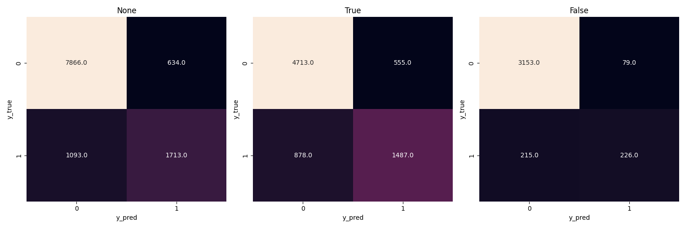
name = 'adult_heatmap_prot-sex_cm-rate'
metrics = data[data['model'] == 'logisticregression']
cols = ['TNR', 'FPR', 'FNR', 'TPR']
fig, axs = plt.subplots(1, 3, figsize=(15, 5))
for idx, privileged in enumerate(['None', 'True', 'False']):
cm = metrics[metrics['privileged'] == privileged]
cm = cm[cols].values.reshape(2,2)
sns.heatmap(data=cm,
annot=cm,
fmt=".3f",
cbar=False,
cmap='Blues',
ax=axs[idx])
axs[idx].set_xlabel("y_pred")
axs[idx].set_ylabel("y_true")
axs[idx].set_title(privileged)
utils.savefig(fig, name)
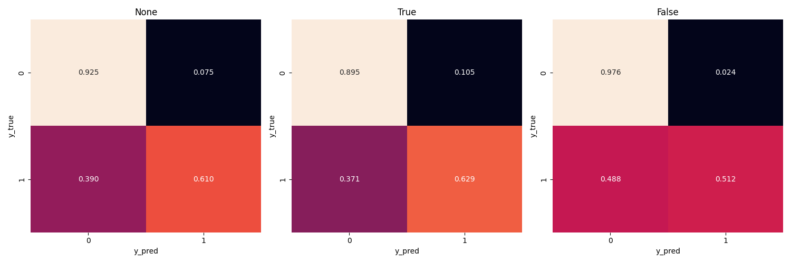
The model does well with the negative class (~92% accuracy). It doesn't do so well with the positive class (~61% accuracy) with a less then idea false negative rate (~39%). This is expected since we have more number of negative examples in the dataset.
The performance of the model remains some what similar across the conditions on the protected attribute.
There is a slight uptick in the true negative rate when we condition on the unprivileged group (right more plot). The true positive rate drops slightly here as well, with a rise in the false positive rate. So the model is able to classify women with a lower income with high accuracy. But the performance is 50-50 when it comes to women with a higher income. And this again is corroborated by the fact that we trained the model with very few examples of women with a high income.
name = 'adult_heatmap_prot-sex_cm-gen'
metrics = data[data['model'] == 'logisticregression']
cols = ['GTN', 'GFP', 'GFN', 'GTP']
fig, axs = plt.subplots(1, 3, figsize=(15, 5))
for idx, privileged in enumerate(['None', 'True', 'False']):
cm = metrics[metrics['privileged'] == privileged]
cm = cm[cols].values.reshape(2,2)
sns.heatmap(data=cm,
annot=cm,
fmt="",
cbar=False,
cmap='Blues',
ax=axs[idx])
axs[idx].set_xlabel("y_pred")
axs[idx].set_ylabel("y_true")
axs[idx].set_title(privileged)
utils.savefig(fig, name)
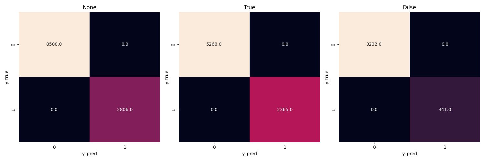
name = 'adult_heatmap_prot-sex_cm-gen-rate'
metrics = data[data['model'] == 'logisticregression']
cols = ['GTNR', 'GFPR', 'GFNR', 'GTPR']
fig, axs = plt.subplots(1, 3, figsize=(15, 5))
for idx, privileged in enumerate(['None', 'True', 'False']):
cm = metrics[metrics['privileged'] == privileged]
cm = cm[cols].values.reshape(2,2)
sns.heatmap(data=cm,
annot=cm,
fmt=".3f",
cbar=False,
cmap='Blues',
ax=axs[idx])
axs[idx].set_xlabel("y_pred")
axs[idx].set_ylabel("y_true")
axs[idx].set_title(privileged)
utils.savefig(fig, name)
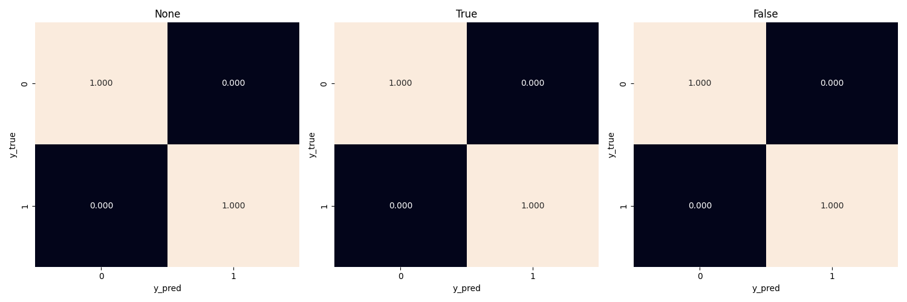
The num_generalized_* metrics use the probability associated with
the predicted label (rather than the absolute label). I assume there
is some sort of rounding up going on internally which results in the
true negative & true positive numbers to be exactly the same as the
data. It will be interesting to experiment here more & see when (and
if) these numbers change for variation in the dataset or model.
3.2. Analysis of base_rate
The base_rate is the probability that the label of a given example
is positive.
name = 'adult_barplot_prot-sex_base-rate'
fig, ax = plt.subplots()
sns.barplot(data=data,
y='base_rate',
x='subset',
hue='privileged',
hue_order=['None', 'True', 'False'],
ax=ax)
for container in ax.containers:
ax.bar_label(container)
utils.savefig(fig, name)

Here, we note that the base_rate is similar across the subsets and
the conditions. This makes sense since we used random sampling to
generate the train & test subsets.
The unconditioned base_rate is ~25% and this makes sense since we
have more examples of the negative class. The conditioned base_rate
for the privileged group is higher than the unprivileged group (~30%
vs. ~11%). This makes sense as well since we have more examples of the
privileged group.
3.3. Analysis of {positive,negative}_predictive_value & false_{discovery,omission}_rate
The wikipedia page on binary classification was very helpful to make sense of these metrics. Following is a table summarising their mathematical formulas
| PPV | TP/(TP+FP) |
| FDR | FP/(TP+FP) |
| FOR | FN/(TN+FN) |
| NPV | TN/(TN+FN) |
With the following model of confusion matrix (where y_true is on y
axis and y_pred is on x axis):
| ytrue | 0 | TN | FP |
| ytrue | 1 | FN | TP |
| 0 | 1 | ||
| ypred | ypred |
We visualise the above metrics in a confusion matrix like so:
| ytrue | 0 | NPV | FDR |
| ytrue | 1 | FOR | PPV |
| 0 | 1 | ||
| ypred | ypred |
name = 'adult_heatmap_prot-sex_cm-ppv-fdr-for-npv'
metrics = data[data['model'] == 'logisticregression']
cols = ['NPV', 'FDR', 'FOR', 'PPV']
fig, axs = plt.subplots(1, 3, figsize=(15, 5))
for idx, privileged in enumerate(['None', 'True', 'False']):
cm = metrics[metrics['privileged'] == privileged]
cm = cm[cols].values.reshape(2,2)
sns.heatmap(data=cm,
annot=cm,
fmt=".3f",
cbar=False,
cmap='Blues',
ax=axs[idx])
axs[idx].set_xlabel("y_pred")
axs[idx].set_ylabel("y_true")
axs[idx].set_title(privileged)
utils.savefig(fig, name)
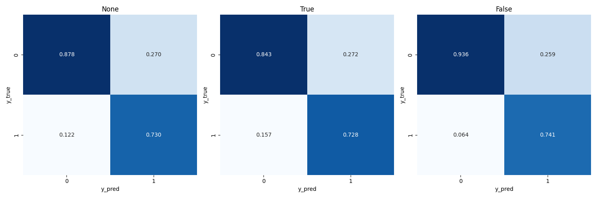
[ ]I still don't understand what the metrics imply?[ ]PPV is also the precision, review precision & recall
3.4. Analysis of disparate_impact & statistical_parity_difference
These metrics exist both for the data & the model so we should compare them and see how they differ. For each metric, we create two plots: First, we observe the distribution of the metric across the subsets. And second we compare the distribution of the metric when calculated with & without a model.
disparate_impact when calculated without a model, is expressed
mathematically as follows:
So intuitively, if we have more examples of positive class with the privileged group (sex is 'Male'), the metric will approach 0. Ideally, we want the metric to be high with a maximum value of 1 which indicates that we have equal number of positive examples for both privileged & unprivileged groups.
name = 'adult_barplot_prot-sex_subset-all_disparate-impact'
fig, ax = plt.subplots()
sns.barplot(data=data[data['model'] == 'None'],
y='disparate_impact',
x='subset',
ax=ax)
for container in ax.containers:
ax.bar_label(container)
utils.savefig(fig, name)
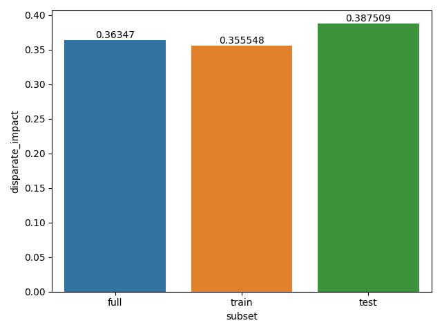
The disparate_impact across the various subsets is low. And this
makes sense since we do not have that many examples of positive class
for the unprivileged group in our dataset.
name = 'adult_barplot_prot-sex_subset-test_disparate-impact'
fig, ax = plt.subplots()
sns.barplot(data=data[data['subset'] == 'test'],
y='disparate_impact',
x='model',
ax=ax)
for container in ax.containers:
ax.bar_label(container)
utils.savefig(fig, name)
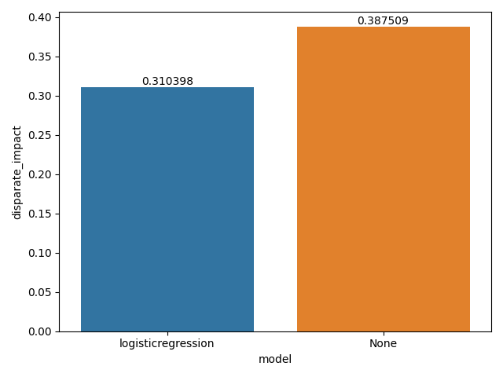
When we calculate disparate_impact using a model, we use the
predictions instead of the actual label. The mathematical formula
changes to the following.
The disparate_impact in the model is similar to what we see in the
dataset. This makes sense since the model merely reflects the
statistics of the dataset.
name = 'adult_barplot_prot-sex_subset-all_stat-par-diff'
fig, ax = plt.subplots()
sns.barplot(data=data[data['model'] == 'None'],
y='statistical_parity_difference',
x='subset',
ax=ax)
for container in ax.containers:
ax.bar_label(container)
utils.savefig(fig, name)

The statistical_parity_difference is expressed mathematically as
follows.
Intuitively, the value for this metric falls within the range of \([-1, 1]\). A value of 0 indicates that the dataset contains equal number of positive examples for both privileged & unprivileged groups. A value of -1 is not ideal since it indicates that the dataset contains significantly more examples of the positive class with the privileged group. The idea value for this metric thus lies between \([0, 1]\).
name = 'adult_barplot_prot-sex_subset-test_stat-par-diff'
fig, ax = plt.subplots()
sns.barplot(data=data[data['subset'] == 'test'],
y='statistical_parity_difference',
x='model',
ax=ax)
for container in ax.containers:
ax.bar_label(container)
utils.savefig(fig, name)
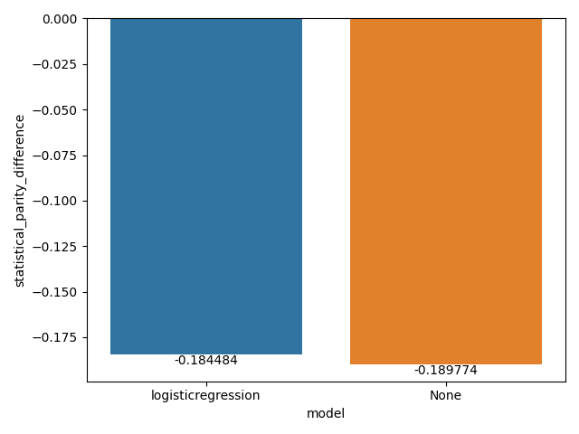
Again, the metric is negative both in the data & model since we have more examples of the positive class with the privileged group.
4. Analysis of protected attribute race
In this section we expand & compare the metrics for both the protected attributes.
data = adult[adult['protected'] == 'race'] data.shape
| 12 | 32 |
4.1. Analysis of num_{positive,negative}, num_{true,false}_{positive,negative} & num_{true,false}_{positive_negative}_rate
name = 'adult_barplot_prot-race_subset-all_num-pos-neg'
fig, axs = plt.subplots(1, 2, sharey=True, figsize=(10, 5))
sns.barplot(data=data,
y='num_positives',
x='subset',
hue='privileged',
hue_order=['None', 'True', 'False'],
ax=axs[0])
for container in axs[0].containers:
axs[0].bar_label(container)
sns.barplot(data=data,
y='num_negatives',
x='subset',
hue='privileged',
hue_order=['None', 'True', 'False'],
ax=axs[1])
for container in axs[1].containers:
axs[1].bar_label(container)
utils.savefig(fig, name)

name = 'adult_barplot_prot-race_subset-test_num-pos-neg'
fig, axs = plt.subplots(1, 2, sharey=True, figsize=(10, 5))
sns.barplot(data=data[data['subset'] == 'test'],
y='num_positives',
x='subset',
hue='privileged',
hue_order=['None', 'True', 'False'],
ax=axs[0])
for container in axs[0].containers:
axs[0].bar_label(container)
sns.barplot(data=data[data['subset'] == 'test'],
y='num_negatives',
x='subset',
hue='privileged',
hue_order=['None', 'True', 'False'],
ax=axs[1])
for container in axs[1].containers:
axs[1].bar_label(container)
utils.savefig(fig, name)

name = 'adult_heatmap_prot-race_cm'
metrics = data[data['model'] == 'logisticregression']
cols = ['TN', 'FP', 'FN', 'TP']
fig, axs = plt.subplots(1, 3, figsize=(15, 5))
for idx, privileged in enumerate(['None', 'True', 'False']):
cm = metrics[metrics['privileged'] == privileged]
cm = cm[cols].values.reshape(2,2)
sns.heatmap(data=cm,
annot=cm,
fmt="",
cbar=False,
cmap='Blues',
ax=axs[idx])
axs[idx].set_xlabel("y_pred")
axs[idx].set_ylabel("y_true")
axs[idx].set_title(privileged)
utils.savefig(fig, name)
name = 'adult_heatmap_prot-race_cm-rate'
metrics = data[data['model'] == 'logisticregression']
cols = ['TNR', 'FPR', 'FNR', 'TPR']
fig, axs = plt.subplots(1, 3, figsize=(15, 5))
for idx, privileged in enumerate(['None', 'True', 'False']):
cm = metrics[metrics['privileged'] == privileged]
cm = cm[cols].values.reshape(2,2)
sns.heatmap(data=cm,
annot=cm,
fmt=".3f",
cbar=False,
cmap='Blues',
ax=axs[idx])
axs[idx].set_xlabel("y_pred")
axs[idx].set_ylabel("y_true")
axs[idx].set_title(privileged)
utils.savefig(fig, name)
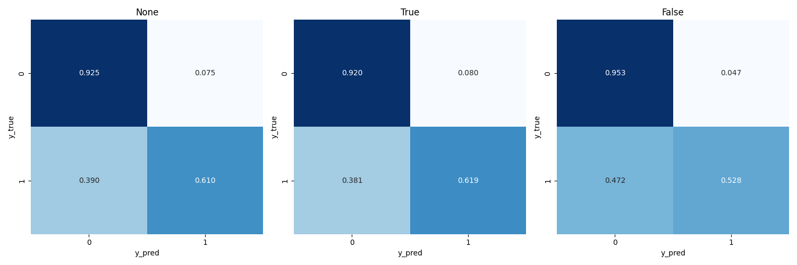
name = 'adult_heatmap_prot-race_cm-gen'
metrics = data[data['model'] == 'logisticregression']
cols = ['GTN', 'GFP', 'GFN', 'GTP']
fig, axs = plt.subplots(1, 3, figsize=(15, 5))
for idx, privileged in enumerate(['None', 'True', 'False']):
cm = metrics[metrics['privileged'] == privileged]
cm = cm[cols].values.reshape(2,2)
sns.heatmap(data=cm,
annot=cm,
fmt="",
cbar=False,
cmap='Blues',
ax=axs[idx])
axs[idx].set_xlabel("y_pred")
axs[idx].set_ylabel("y_true")
axs[idx].set_title(privileged)
utils.savefig(fig, name)

name = 'adult_heatmap_prot-race_cm-gen-rate'
metrics = data[data['model'] == 'logisticregression']
cols = ['GTNR', 'GFPR', 'GFNR', 'GTPR']
fig, axs = plt.subplots(1, 3, figsize=(15, 5))
for idx, privileged in enumerate(['None', 'True', 'False']):
cm = metrics[metrics['privileged'] == privileged]
cm = cm[cols].values.reshape(2,2)
sns.heatmap(data=cm,
annot=cm,
fmt=".3f",
cbar=False,
cmap='Blues',
ax=axs[idx])
axs[idx].set_xlabel("y_pred")
axs[idx].set_ylabel("y_true")
axs[idx].set_title(privileged)
utils.savefig(fig, name)
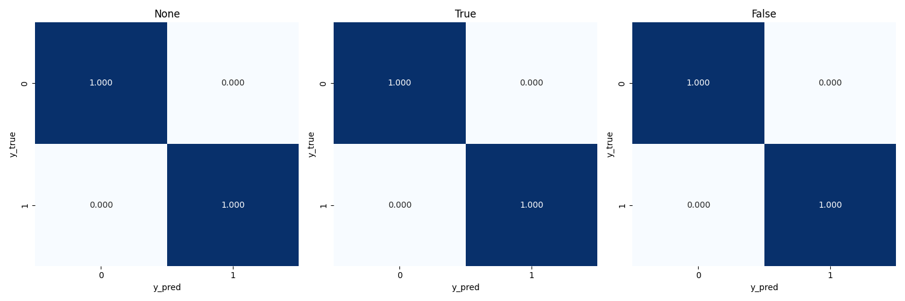
4.2. Analysis of base_rate
name = 'adult_barplot_prot-race_base-rate'
fig, ax = plt.subplots()
sns.barplot(data=data,
y='base_rate',
x='subset',
hue='privileged',
hue_order=['None', 'True', 'False'],
ax=ax)
for container in ax.containers:
ax.bar_label(container)
utils.savefig(fig, name)

4.3. Analysis of {positive,negative}_predictive_value & false_{discovery,omission}_rate
name = 'adult_heatmap_prot-race_cm-ppv-fdr-for-npv'
metrics = data[data['model'] == 'logisticregression']
cols = ['NPV', 'FDR', 'FOR', 'PPV']
fig, axs = plt.subplots(1, 3, figsize=(15, 5))
for idx, privileged in enumerate(['None', 'True', 'False']):
cm = metrics[metrics['privileged'] == privileged]
cm = cm[cols].values.reshape(2,2)
sns.heatmap(data=cm,
annot=cm,
fmt=".3f",
cbar=False,
cmap='Blues',
ax=axs[idx])
axs[idx].set_xlabel("y_pred")
axs[idx].set_ylabel("y_true")
axs[idx].set_title(privileged)
utils.savefig(fig, name)
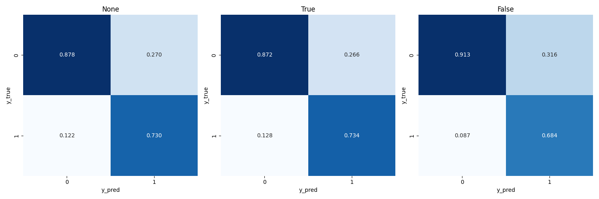
4.4. Analysis of disparate_impact & statistical_parity_difference
name = 'adult_barplot_prot-race_subset-all_disparate-impact'
fig, ax = plt.subplots()
sns.barplot(data=data[data['model'] == 'None'],
y='disparate_impact',
x='subset',
ax=ax)
for container in ax.containers:
ax.bar_label(container)
utils.savefig(fig, name)
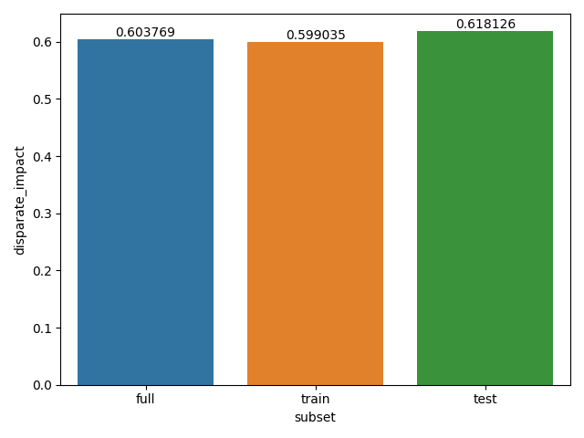
name = 'adult_barplot_prot-race_subset-test_disparate-impact'
fig, ax = plt.subplots()
sns.barplot(data=data[data['subset'] == 'test'],
y='disparate_impact',
x='model',
ax=ax)
for container in ax.containers:
ax.bar_label(container)
utils.savefig(fig, name)
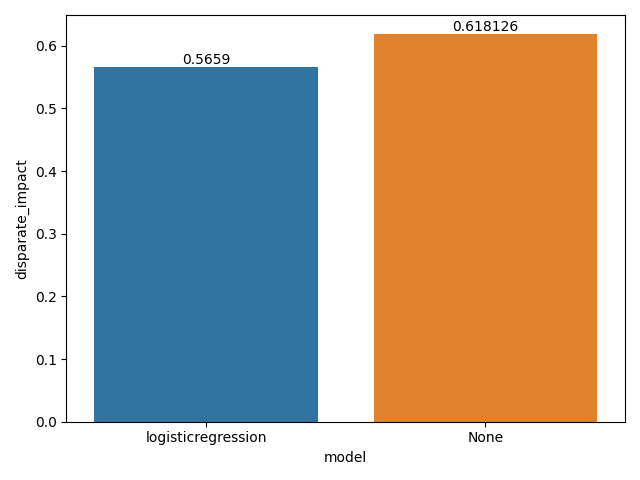
name = 'adult_barplot_prot-race_subset-all_stat-par-diff'
fig, ax = plt.subplots()
sns.barplot(data=data[data['model'] == 'None'],
y='statistical_parity_difference',
x='subset',
ax=ax)
for container in ax.containers:
ax.bar_label(container)
utils.savefig(fig, name)
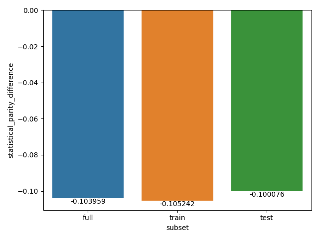
name = 'adult_barplot_prot-race_subset-test_stat-par-diff'
fig, ax = plt.subplots()
sns.barplot(data=data[data['subset'] == 'test'],
y='statistical_parity_difference',
x='model',
ax=ax)
for container in ax.containers:
ax.bar_label(container)
utils.savefig(fig, name)
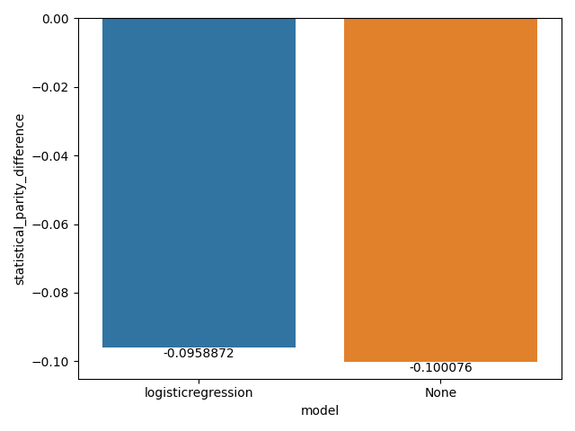